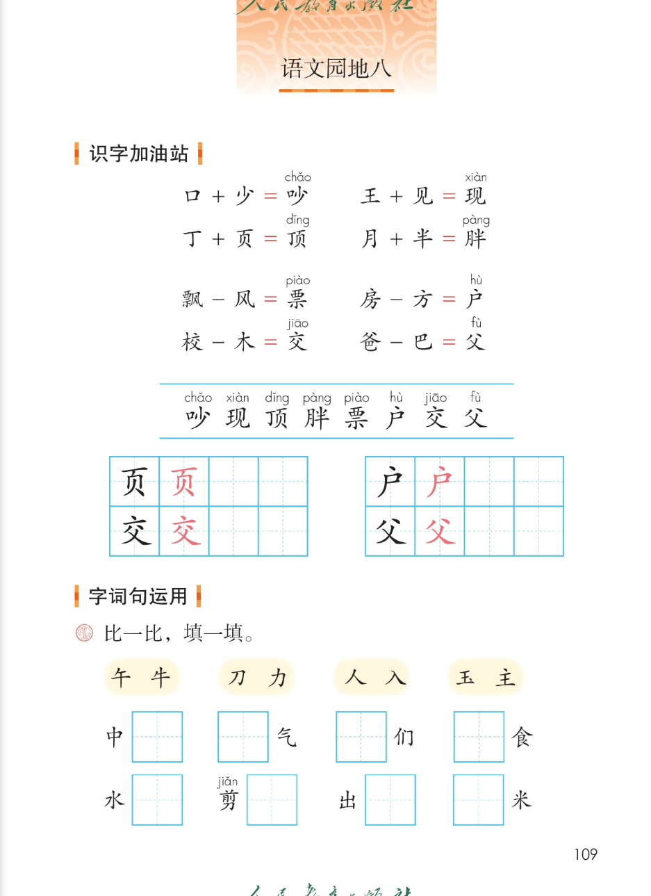
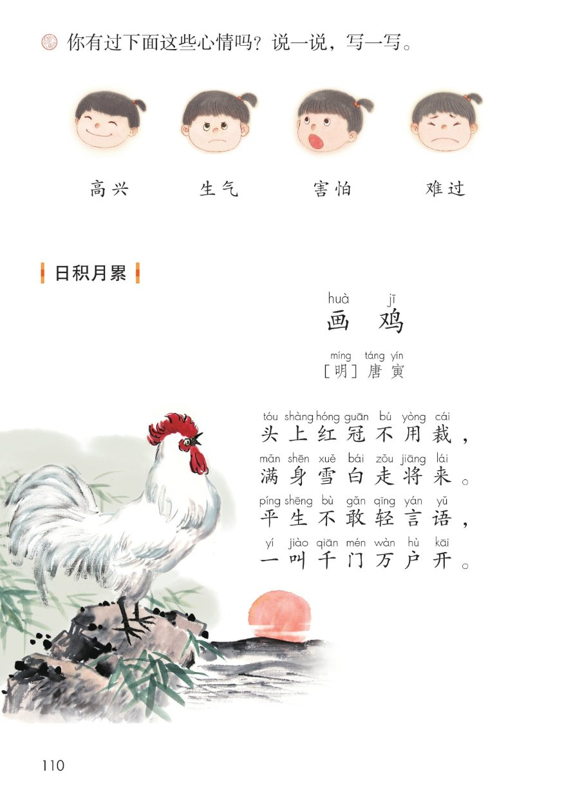
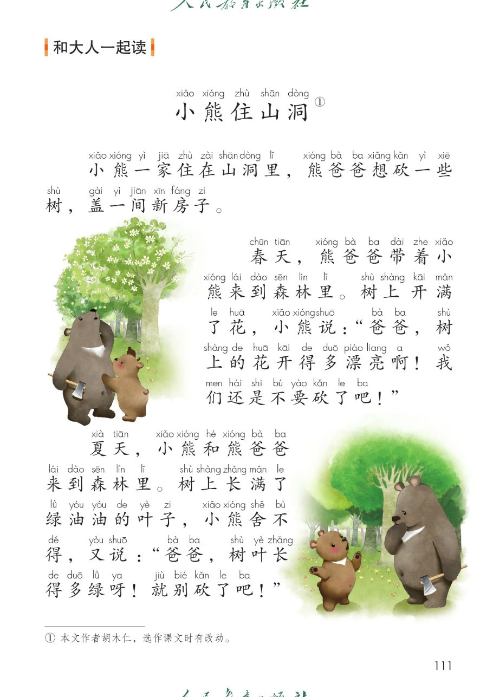
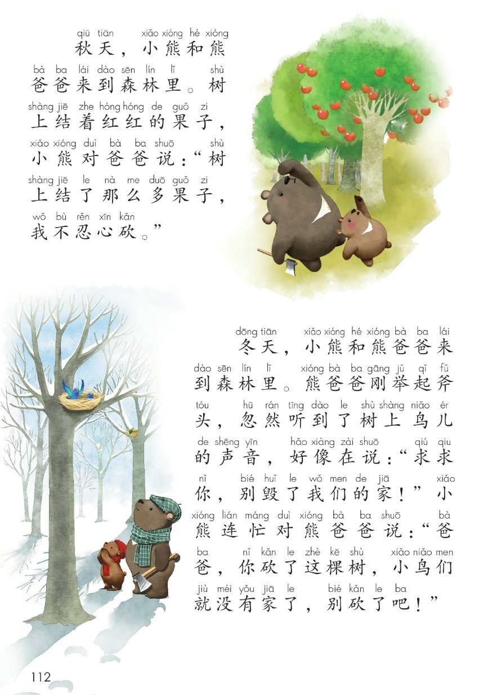
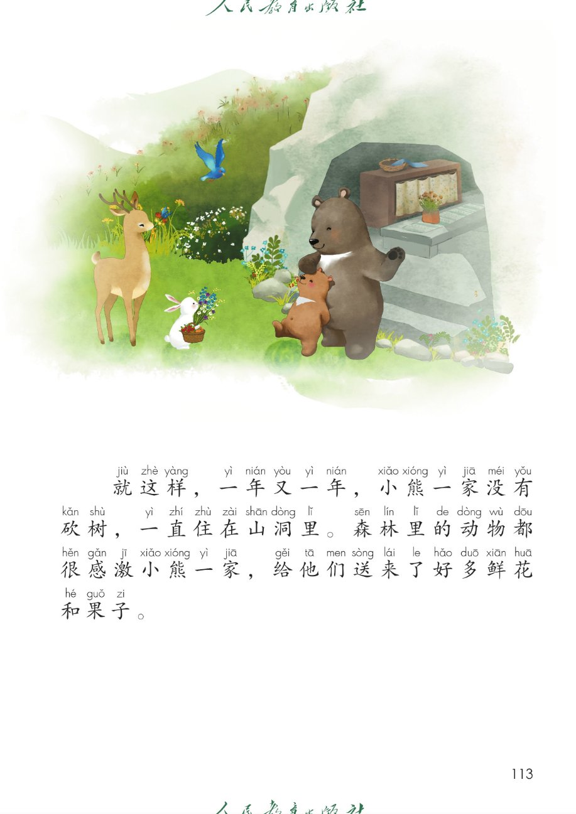

画 鸡
[明] 唐寅
头上红冠不用裁，
满身雪白走将来。
平生不敢轻言语，
一叫千门万户开。
小熊住山洞①
小熊一家住在山洞里，熊爸爸想砍一些树，盖一间新房子。
春天，熊爸爸带着小熊来到森林里。树上开满了花，小熊说：“爸爸，树上的花开得多漂亮啊！我们还是不要砍了吧！”
夏天，小熊和熊爸爸来到森林里。树上长满了绿油油的叶子，小熊舍不得，又说：“爸爸，树叶长得多绿呀！就别砍了吧！”
秋天，小熊和熊爸爸来到森林里。树上结着红红的果子，小熊对爸爸说：“树上结了那么多果子，我不忍心砍。”
冬天，小熊和熊爸爸来到森林里。熊爸爸刚举起斧头，忽然听到了树上鸟儿的声音，好像在说：“求求你，别毁了我们的家！”小熊连忙对熊爸爸说：“爸爸，你砍了这棵树，小鸟们就没有家了，别砍了吧！”
就这样，一年又一年，小熊一家没有砍树，一直住在山洞里。森林里的动物都很感激小熊一家，给他们送来了好多鲜花和果子。




